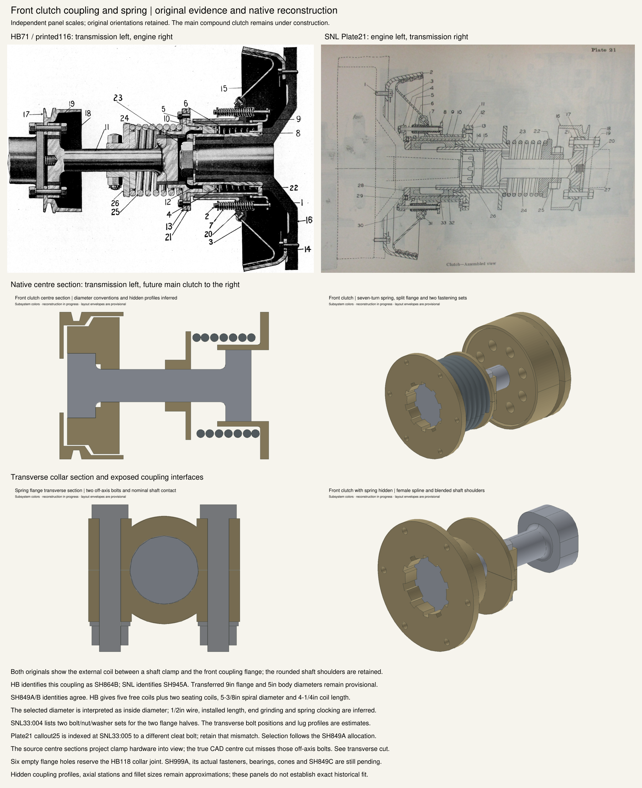

Original HB and SNL sections beside the native reconstruction. Independent scales and opposite source orientations. Dimensional transfers and inferred details remain documented approximations.

Source hashes and comparison notes